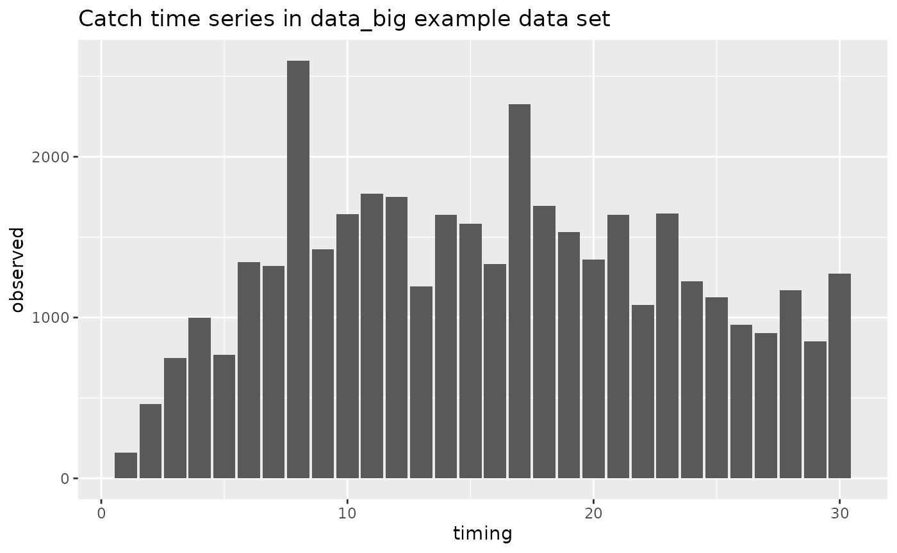
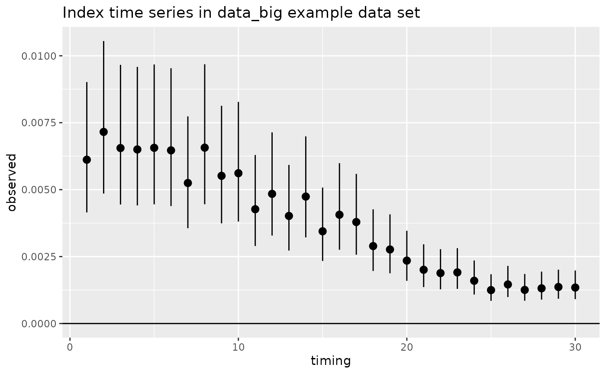
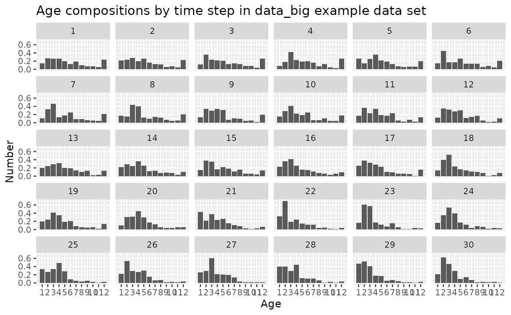
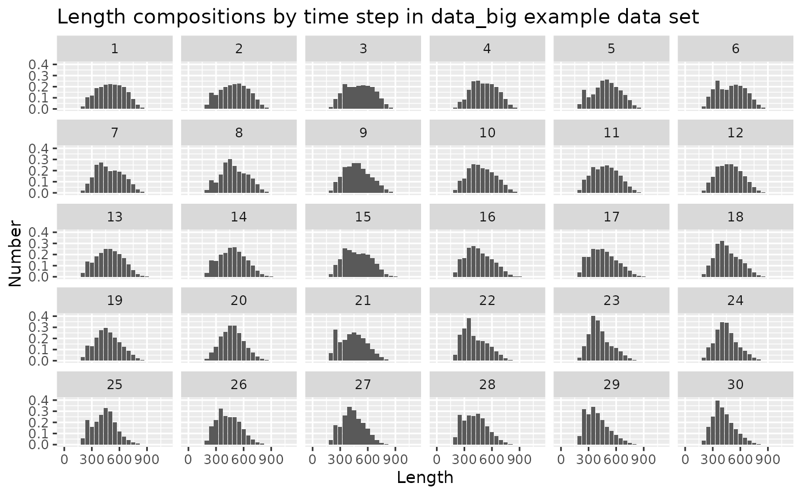
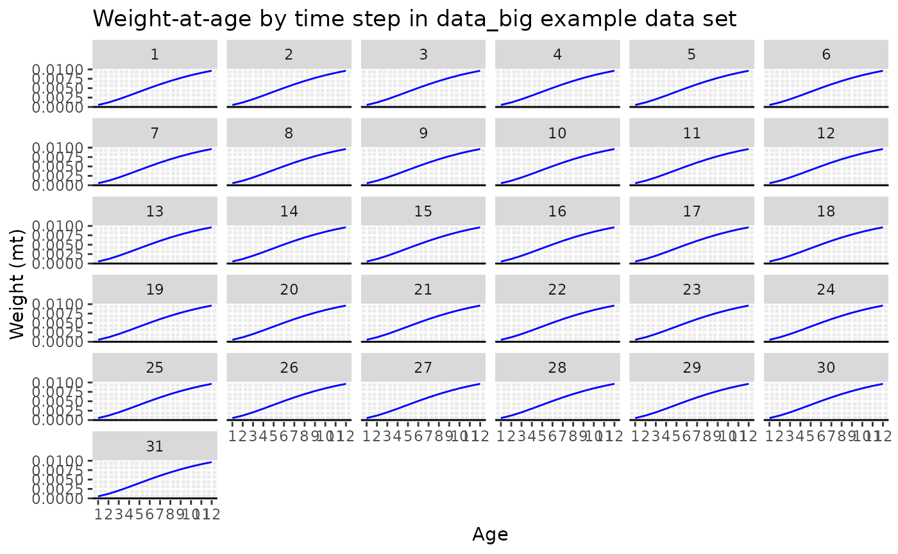
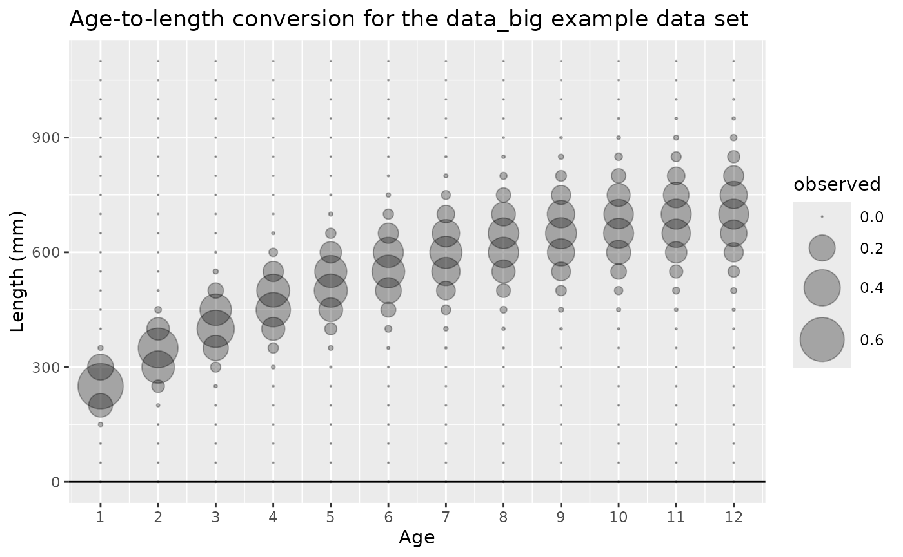

Other sources of information
This vignette is an expansion of the “Data”
section in the FIMS
overview vignette. It provides more details about the data structure
needed for a FIMS model and how to prepare your data for use in a FIMS
model using the FIMSFrame() function.
The FIMS cheatsheet includes a quick summary of the input data format.
The help page for the FIMS::data_big data set (https://noaa-fims.github.io/FIMS/reference/data_big.html
or via ?FIMS::data_big) provides detailed information about
the input data format.
Note: this vignette does not include anything about model configuration, which is covered in the overview vignette linked above.
Data format
The input data for a FIMS model is a single long data frame with the following columns: type, fleet, age, length, timing, observed, unit, and uncertainty. Both the single table and long format are in contrast to the input format for some legacy stock assessment models where the data are provided in multiple tables, each with a different format. The SS3 data file, for instance, has separate tables for catch, indices, age compositions, length compositions, with wide tables for the composition data (each age or length bin has a different column). The use of a single, long table for data input used by FIMS makes it easier to summarize and filter the data across data types (e.g., by fleet, timing, age, etc.), as well as being better suited to the widely-used tidyverse collection of packages in R.
Two drawbacks of the long format are (1) some information is duplicated, and (2) the long format is harder to read and understand by looking at the raw data frame. To meet this second challenge, the FIMS team is working on functions to summarize, visualize, and check for errors in the input data.
The currently available values for the type column are
“age_comp”, “age_to_length_conversion”, “ageing_error”, “index”,
“catch”, “length_bin”, “length_comp”, and “weight_at_age”. The
“weight_at_age”, “ageing_error”, and “age_to_length_conversion” types
are not currently treated as data in the sense that they are not
included in the likelihood. They are used in the population dynamics
calculations or, for “ageing_error”, in the expected age
compositions.
The individual data types are described in more detail below after introducing the example data set that is included in the package.
data_big
A sample data frame for a catch-at-age model with both ages and
lengths is stored in the package as data_big. This data set
is based on data that was used in Li et al. (2021) for
the Model Comparison Project (github
site). The length data have since been added data-raw/data_big.R
based on an age–length conversion matrix. To see how this example data
frame was created, see the R script here R/data_big.R.
FIMSFrame()
FIMSFrame() must be used to create a data object that
can be passed to a FIMS model. This function returns an object that has
the FIMSFrame class. This class contains a data slot that
stores the input data frame and several other slots that store summary
information about the object, e.g., the fleet names, the number of age
bins, etc. All of this information can be accessed using
get_*() functions, e.g., get_n_years(),
get_fleets(). Every fleet named in the data must have
catch, index, or composition data. FIMSFrame() returns an
error otherwise, so a misspelled fleet name in other rows does not add a
fleet to the model.
When you execute FIMSFrame() on a long data frame, such
as data_big, the function executes several error checks to
help ensure that your data is ready for a FIMS model. For example, until
the internal estimation of growth is possible, all catch-at-age models
require weight-at-age data. If your data frame does not have
weight-at-age data, then FIMSFrame() will error and return
helpful information on what you are missing.
The output of FIMSFrame() also contains summary
information about your data and has an internal plotting function. See
the FIMS
overview vignette for more information.
data_4_model <- FIMSFrame(data_big)
data_4_model## tbl_df of class 'FIMSFrame'## with the following 'types': age_comp, catch, length_comp, index, age_to_length_conversion, weight_at_age## Found more than one class "tbl_df" in cache; using the first, from namespace 'FIMS'## Also defined by 'tibble'## Found more than one class "tbl_df" in cache; using the first, from namespace 'FIMS'## Also defined by 'tibble'## # A tibble: 6 × 8
## type fleet age length timing observed unit uncertainty
## <chr> <chr> <int> <dbl> <dbl> <dbl> <chr> <chr>
## 1 age_comp fleet1 1 NA 1 0.07 proportion ~ dmultinom(prob = ag…
## 2 age_comp fleet1 2 NA 1 0.1 proportion ~ dmultinom(prob = ag…
## 3 age_comp fleet1 3 NA 1 0.115 proportion ~ dmultinom(prob = ag…
## 4 age_comp fleet1 4 NA 1 0.15 proportion ~ dmultinom(prob = ag…
## 5 age_comp fleet1 5 NA 1 0.1 proportion ~ dmultinom(prob = ag…
## 6 age_comp fleet1 6 NA 1 0.05 proportion ~ dmultinom(prob = ag…
## additional slots include the following:fleets:
## [1] "fleet1" "survey1"
## n_years:
## [1] 30
## ages:
## [1] 1 2 3 4 5 6 7 8 9 10 11 12
## n_ages:
## [1] 12
## lengths:
## [1] 0 50 100 150 200 250 300 350 400 450 500 550 600 650 700
## [16] 750 800 850 900 950 1000 1050 1100
## n_lengths:
## [1] 23
## start_year:
## [1] 1
## end_year:
## [1] 30Catch (type == "catch")
The catch data type contains the total catch in weight or numbers for
each time step. FIMS does not yet include the option to model discards
internally, so “catch” should account for all catch. The catch are not
associated with an age or length so those columns should only contain
NA values. The unit column should be
mt for catch in weight or number for catch in
numbers, and all catch rows of a fleet must use the same unit. FIMS fits
mt catch to the expected catch in weight and
number catch to the expected catch in numbers. FIMS does
not rescale catch, so catch in numbers must be on the same scale as
numbers at age in the model. For example, when weight at age is in mt
per fish, catch in numbers is the number of fish, not thousands of fish.
The uncertainty column should be the standard deviation of
the logged observations if you are using the lognormal distribution to
fit your data. log_Fmort parameters for each fleet and time
step with catch can be estimated to fit the model to the catch data,
informed by the uncertainty values. Common practice is to set the
uncertainty to a small number, like 0.001, so the catch data are fit
closely. A catch of 0 means the fleet did not fish in that time step.
setup_default_parameters() fixes log_Fmort for
that fleet and year at -200, so fishing mortality is effectively 0, and
the 0 is left out of the likelihood. It is reported as -999 in the
output, the same as missing data. If you estimate log_Fmort
in that year instead, initialize_fims() warns, because
nothing in the data informs it. A fleet with a catch of 0 in every year
and no composition data gives no information on its selectivity. Use
-999, not 0, for a missing catch.
## type fleet age length timing observed unit
## 1 catch fleet1 NA NA 1 161.6455 mt
## 2 catch fleet1 NA NA 2 461.0895 mt
## 3 catch fleet1 NA NA 3 747.2900 mt
## uncertainty
## 1 ~ dlnorm(meanlog = log_catch_expected, sdlog = 0.00999975001354021 )
## 2 ~ dlnorm(meanlog = log_catch_expected, sdlog = 0.00999975001354021 )
## 3 ~ dlnorm(meanlog = log_catch_expected, sdlog = 0.00999975001354021 )
# time series plot of catch data
library(ggplot2)
FIMS::data_big |>
dplyr::filter(type == "catch") |>
ggplot(aes(x = timing, y = observed)) +
geom_bar(stat = "identity") +
ggtitle("Catch time series in data_big example data set")
Indices (type == "index")
The index data type contains the relative or absolute abundance index
for each time step. The inputs are similar to catch, in having
NA values for age and length, mt or
number for unit (1 unit for all index rows of
a fleet), and index uncertainty as the standard deviation of the logged
observations. An index of 0 or less cannot be fit with the lognormal
distribution, and FIMSFrame() returns an error for it. Use
-999 for a missing index, or a distribution that allows 0.
## type fleet age length timing observed unit
## 1 index survey1 NA NA 1 0.006117418 mt
## 2 index survey1 NA NA 2 0.007156588 mt
## 3 index survey1 NA NA 3 0.006553376 mt
## uncertainty
## 1 ~ dlnorm(meanlog = log_index_expected, sdlog = 0.198042200435365 )
## 2 ~ dlnorm(meanlog = log_index_expected, sdlog = 0.198042200435365 )
## 3 ~ dlnorm(meanlog = log_index_expected, sdlog = 0.198042200435365 )
# time series plot of index data
FIMS::data_big |>
dplyr::filter(type == "index") |>
ggplot2::ggplot(ggplot2::aes(x = timing, y = observed)) +
ggplot2::geom_point() +
ggplot2::geom_pointrange(ggplot2::aes(
ymin = stats::qlnorm(
p = 0.025,
meanlog = log(observed),
sdlog = unlist(
FIMS:::parse_data_distribution(uncertainty)$sdlog,
use.names = FALSE
)
),
ymax = stats::qlnorm(
p = 0.975,
meanlog = log(observed),
sdlog = unlist(
FIMS:::parse_data_distribution(uncertainty)$sdlog,
use.names = FALSE
)
)
)) +
ggplot2::geom_hline(yintercept = 0) +
ggplot2::ggtitle("Index time series in data_big example data set")
Age compositions (type == "age_comp")
The age-composition data type contains the age distribution of a
fleet for a time step. The age column contains integer ages
defining the age bins. While standard FIMS models typically assume age
bins start at zero, the data_big example currently uses ages ranging
from 1–12, and thus, recruitment will be age-1 fish not age-0 fish. The
observed column contains either the number or the
proportion of the catch or survey in each age bin. The unit
column should be either “number” or “proportion”. If “proportion” is
used, the observations are checked at a later step to confirm that they
sum to 1.0. The uncertainty column should be the input
sample size for the time step (equal across all ages within that time
step). When the unit is set to a proportion, the sample size is
multiplied by the proportion; however, when it is set to a number, the
sample size is ignored.
# first three rows of the age composition data
FIMS::data_big |>
dplyr::filter(type == "age_comp") |>
head(3)## type fleet age length timing observed unit
## 1 age_comp fleet1 1 NA 1 0.070 proportion
## 2 age_comp fleet1 2 NA 1 0.100 proportion
## 3 age_comp fleet1 3 NA 1 0.115 proportion
## uncertainty
## 1 ~ dmultinom(prob = agecomp_proportion, size = 200 )
## 2 ~ dmultinom(prob = agecomp_proportion, size = 200 )
## 3 ~ dmultinom(prob = agecomp_proportion, size = 200 )
# plot of age compositions by time step
FIMS::data_big |>
dplyr::filter(type == "age_comp") |>
ggplot2::ggplot(
ggplot2::aes(x = age, y = observed)
) +
ggplot2::geom_bar(stat = "identity") +
ggplot2::xlab("Age") +
ggplot2::ylab("Number") +
ggplot2::facet_wrap(~timing) +
ggplot2::scale_x_continuous(breaks = get_ages(data_4_model)) +
ggtitle("Age compositions by time step in data_big example data set")
Length compositions (type == "length_comp")
The length-composition data are similar to the age compositions,
except with values in the length column and
age = NA. The length column identifies the
length bin for each observation by its lower edge. A bin holds lengths
from its lower edge up to the next lower edge. For example, with
length values of 0, 50, …, 1100, the bin labeled
250 includes fish measuring at least 250 mm but less than
300 mm (250–299 mm for whole-number measurements). The next bin, labeled
300, includes fish measuring at least 300 mm but less than
350 mm (i.e. [300, 350) in interval notation). When growth
is estimated in FIMS, the first bin also holds all smaller fish and the
last bin holds all larger fish. With fixed
age_to_length_conversion rows, those rows set what each bin
holds. The observed column contains either the number or
the proportion of fish in each length bin. The unit column
should be either “number” or “proportion”. The uncertainty
column should be the input sample size for the time step, repeated
across all length bins in that time step. When the unit is set to a
proportion, the sample size is multiplied by the proportion; however,
when it is set to a number, the sample size is ignored.
When length compositions are included, FIMS needs a way to convert
numbers at age into numbers at length. This can come from fixed
age_to_length_conversion rows or from a growth-derived
age-to-length conversion using the VonB-Schnute Growth module.
# first three rows of the length composition data
FIMS::data_big |>
dplyr::filter(type == "length_comp") |>
head(3)## type fleet age length timing observed unit
## 1 length_comp fleet1 NA 0 1 9.238773e-18 proportion
## 2 length_comp fleet1 NA 50 1 5.892510e-12 proportion
## 3 length_comp fleet1 NA 100 1 1.610390e-07 proportion
## uncertainty
## 1 ~ dmultinom(prob = lengthcomp_proportion, size = 200 )
## 2 ~ dmultinom(prob = lengthcomp_proportion, size = 200 )
## 3 ~ dmultinom(prob = lengthcomp_proportion, size = 200 )
# plot of length compositions by time step
FIMS::data_big |>
dplyr::filter(type == "length_comp") |>
ggplot2::ggplot(
ggplot2::aes(x = length, y = observed)
) +
ggplot2::geom_bar(stat = "identity") +
ggplot2::xlab("Length") +
ggplot2::ylab("Number") +
ggplot2::facet_wrap(~timing) +
ggtitle("Length compositions by time step in data_big example data set")
Length bins (type == "length_bin")
The length_bin data type defines length bins without
providing length-composition observations. These rows are useful when a
model needs length-bin geometry for a growth-derived age-to-length
conversion, but the user is not fitting length-composition data for that
fleet.
For length_bin rows, the length column
contains the lower edge of each length bin, the same as for length
compositions. The observed, age, and
uncertainty columns should usually be NA. The
fleet column identifies which fleet or survey the length
bins apply to, and timing can be NA unless
fleet-specific timing is needed.
length_bin rows with fleet = NA and
timing = NA set the population length bins. These bins are
for the whole population and do not set bins for any fleet. This differs
from age_to_length_conversion rows, where
fleet = NA means the conversion is shared by all
fleets.
Growth uses the population bins for the distribution of length at each age. FIMS then maps that distribution onto each fleet’s bins to get the expected length composition for that fleet. The population bins must cover every fleet’s bins, and no population bin can be wider than a fleet bin it overlaps.
For example, suppose a fleet has bins of 0 to 50 mm and 50 to 100 mm. Population bins of 0 to 25, 25 to 50, 50 to 75, and 75 to 100 mm meet these rules, and the fleet edge at 50 mm is also a population edge. A different set of population bins with a bin of 40 to 60 mm would cross that edge. FIMS splits the fish in that bin between the 2 fleet bins by how much of the bin falls in each, as if fish were spread evenly within the bin. Here half go to each fleet bin. Making every fleet bin edge a population bin edge avoids this split.
The length values are the lower edges of the bins. The
first bin also holds all fish shorter than the first lower edge. The
last bin is open-ended and holds all fish at or above the last lower
edge. FIMS gives the last bin the same width as the bin before it, which
sets the length used for its weight. Set the last lower edge high enough
that few fish fall in this bin. FIMS writes a warning to the log (see
get_log_warnings()) when more than 1% of the fish at an age
in a year are in it.
Without these rows, FIMS builds population bins only when a fleet has
length bins. They are 1 unit wide (1 mm for data_big) from
the smallest fleet lower edge to the largest fleet upper edge, plus 1
more bin. With no population bins, weight at age is the weight at mean
length. Adding these rows can change weight at age, and so biomass, even
without length compositions. This is because weight at age is then
averaged over the length distribution at each age. Population length
bins need a growth module that gives length at age, so they are not used
with EWAA growth.
# population length bins 10 mm wide with lower edges from 0 to 1190 mm, which
# span the data_big fleet length bins (0 to 1150 mm)
population_length_bins <- tibble::tibble(
type = "length_bin",
fleet = NA_character_,
age = NA_integer_,
length = seq(0, 1190, by = 10),
timing = NA_real_,
observed = NA_real_,
unit = NA_character_,
uncertainty = NA_character_
)
data_with_population_bins <- dplyr::bind_rows(
FIMS::data_big,
population_length_bins
)
FIMSFrame(data_with_population_bins)## tbl_df of class 'FIMSFrame'## with the following 'types': age_comp, catch, length_comp, index, age_to_length_conversion, length_bin, weight_at_age## # A tibble: 6 × 8
## type fleet age length timing observed unit uncertainty
## <chr> <chr> <int> <dbl> <dbl> <dbl> <chr> <chr>
## 1 age_comp fleet1 1 NA 1 0.07 proportion ~ dmultinom(prob = ag…
## 2 age_comp fleet1 2 NA 1 0.1 proportion ~ dmultinom(prob = ag…
## 3 age_comp fleet1 3 NA 1 0.115 proportion ~ dmultinom(prob = ag…
## 4 age_comp fleet1 4 NA 1 0.15 proportion ~ dmultinom(prob = ag…
## 5 age_comp fleet1 5 NA 1 0.1 proportion ~ dmultinom(prob = ag…
## 6 age_comp fleet1 6 NA 1 0.05 proportion ~ dmultinom(prob = ag…
## additional slots include the following:fleets:
## [1] "fleet1" "survey1"
## n_years:
## [1] 30
## ages:
## [1] 1 2 3 4 5 6 7 8 9 10 11 12
## n_ages:
## [1] 12
## lengths:
## [1] 0 50 100 150 200 250 300 350 400 450 500 550 600 650 700
## [16] 750 800 850 900 950 1000 1050 1100
## n_lengths:
## [1] 23
## start_year:
## [1] 1
## end_year:
## [1] 30Weight-at-age data (type == "weight_at_age")
The weight-at-age data are not currently included in the likelihood
and are just used for converting from numbers to biomass in the
population dynamics. The unit column should be
mt and the uncertainty should be NA.
The population weight at age has fleet = NA. It is used
for biomass and spawning biomass, and for the catch and index weight of
any fleet without its own weight at age. Rows with a fleet name are that
fleet’s weight at age for its catch and index weight, for example from
port samples or survey samples. For each year, a fleet uses its own rows
for that year, then its own timing = NA rows, then the
population weight at age, so a fleet only needs rows for the years that
differ. If there are no fleet = NA rows and only 1 fleet
has weight rows, those rows are used as the population weight at age,
with a warning.
Rows with timing = NA are the default for every year,
and rows with a timing replace that default for that year
only. Timings outside the model years and the year after the last are an
error. Every timing that is used needs 1 row for each model age, and
rows are never averaged. Without timing = NA rows, every
model year needs its own rows, plus the year after the last model year,
because FIMS reports spawning biomass at the beginning of the year for
every year, including the year after the last catches are removed from
the population.
The weight-at-age observations for the data_big are
identical across time steps and are provided for timing = 1 to 31 with
fleet = NA. The same weights could be given as 1 set of
rows with timing = NA.
# first and last entries of the weight-at-age data
FIMS::data_big |>
dplyr::filter(type == "weight_at_age") |>
head(3)## type fleet age length timing observed unit uncertainty
## 1 weight_at_age <NA> 1 NA 1 0.0005306555 mt <NA>
## 2 weight_at_age <NA> 1 NA 2 0.0005306555 mt <NA>
## 3 weight_at_age <NA> 1 NA 3 0.0005306555 mt <NA>## type fleet age length timing observed unit uncertainty
## 370 weight_at_age <NA> 12 NA 29 0.009636695 mt <NA>
## 371 weight_at_age <NA> 12 NA 30 0.009636695 mt <NA>
## 372 weight_at_age <NA> 12 NA 31 0.009636695 mt <NA>
# check that the observations are identical across time steps within each age
FIMS::data_big |>
dplyr::filter(type == "weight_at_age") |>
dplyr::group_by(age) |>
dplyr::summarize(n_distinct = dplyr::n_distinct(observed))## # A tibble: 12 × 2
## age n_distinct
## <int> <int>
## 1 1 1
## 2 2 1
## 3 3 1
## 4 4 1
## 5 5 1
## 6 6 1
## 7 7 1
## 8 8 1
## 9 9 1
## 10 10 1
## 11 11 1
## 12 12 1
# plot of weight-at-age by time step
FIMS::data_big |>
dplyr::filter(type == "weight_at_age") |>
ggplot2::ggplot(
ggplot2::aes(x = age, y = observed)
) +
ggplot2::geom_line(color = "blue") +
ggplot2::xlab("Age") +
ggplot2::ylab("Weight (mt)") +
ggplot2::facet_wrap(~timing) +
ggplot2::scale_x_continuous(breaks = get_ages(data_4_model)) +
geom_hline(yintercept = 0) +
ggtitle("Weight-at-age by time step in data_big example data set")
Ageing error (type == "ageing_error")
Ageing error data are optional. Age readers do not always assign the true age, which spreads a strong year class across neighboring ages. With ageing error rows, each fleet’s expected age composition is moved from true age to observed age before it is compared to the data. Length compositions, catch, and indices still use true age, and ageing error is not part of the likelihood.
Each row gives the probability that a fish of one true age is read as
one observed age. The observed age goes in age, the true
age in uncertainty, and the probability in
observed, with unit = "proportion". The
uncertainty column holds formulas for other data types, so
true ages are stored as text, e.g.,
uncertainty = as.character(true_age).
Each set of rows is a full matrix over the model ages, and the
probabilities for each true age must sum to 1. Sums within 1e-3 of 1 are
rescaled to exactly 1, with a warning, and larger differences are an
error. If a matrix was rounded to fewer than 3 decimal places, first
check that uncertainty holds the true age and
age the observed age, then divide each true age’s
probabilities by their total before adding it. Probability on observed
ages below the youngest model age is added to that age, and above the
oldest model age to the plus group, with a warning. Every observed age
needs a total probability, summed across true ages, of at least 1e-3,
because an expected proportion of 0 makes the likelihood undefined.
Every model age needs rows as a true age, in
uncertainty. Rows for true ages outside the model ages are
not used, with a warning. Each row is the probability of each observed
age given one true age, so probabilities for observed ages within a row
can be added, but combining rows for different true ages needs the
number of fish at each true age, which is unknown. The model has no fish
below the youngest age, e.g., true age 0 in a model that starts at age
1, so dropping those rows changes nothing. Above the plus group, the row
for the plus-group true age is used for every fish in the plus
group.
Ageing error can vary by fleet and year. For each fleet and year, the most specific rows are used:
- rows for that fleet and that
timing, - rows for that fleet with
timing = NA, - rows with
fleet = NAand thattiming, and - rows with
fleet = NAandtiming = NA.
Rows with fleet = NA apply to every fleet with
age-composition data. A timing applies to that year only.
Without a timing = NA default, every model year needs its
own rows, including projection years. A fleet with no rows that apply to
it has no ageing error, which is also the default.
With ageing error, the reported agecomp_proportion and
agecomp_expected are at observed age, while
catch_numbers_at_age and index_numbers_at_age
stay at true age.
data_big does not include ageing error. The example
below adds a matrix where each age is read 1 year too young or too old
with probability 0.1.
ageing_error_ages <- get_ages(data_4_model)
n_ageing_error_ages <- length(ageing_error_ages)
ageing_error_matrix <- diag(0.8, n_ageing_error_ages)
ageing_error_matrix[cbind(
1:(n_ageing_error_ages - 1),
2:n_ageing_error_ages
)] <- 0.1
ageing_error_matrix[cbind(
2:n_ageing_error_ages,
1:(n_ageing_error_ages - 1)
)] <- 0.1
ageing_error_matrix[1, 1] <- 0.9
ageing_error_matrix[n_ageing_error_ages, n_ageing_error_ages] <- 0.9
ageing_error <- tibble::tibble(
type = "ageing_error",
fleet = NA_character_,
age = rep(ageing_error_ages, times = n_ageing_error_ages),
length = NA_real_,
timing = NA_real_,
# Rows of the matrix are true ages, so t() lists observed ages within each
# true age.
observed = as.vector(t(ageing_error_matrix)),
unit = "proportion",
uncertainty = as.character(rep(ageing_error_ages, each = n_ageing_error_ages))
)
data_with_ageing_error <- FIMSFrame(dplyr::bind_rows(data_big, ageing_error))
get_data(data_with_ageing_error) |>
dplyr::filter(type == "ageing_error") |>
head(3)## # A tibble: 3 × 8
## type fleet age length timing observed unit uncertainty
## <chr> <chr> <int> <dbl> <dbl> <dbl> <chr> <chr>
## 1 ageing_error <NA> 1 NA NA 0.9 proportion 1
## 2 ageing_error <NA> 1 NA NA 0.1 proportion 2
## 3 ageing_error <NA> 1 NA NA 0 proportion 3Stock Synthesis and the AgeingError package describe ageing error by the mean and standard deviation of observed age at each true age, from age 0 to the population maximum age. In that convention an observed age covers the year from that age to the next, so unbiased readers have a mean of true age + 0.5 (entered as -1 in Stock Synthesis), and a standard deviation of 0.001 means almost no ageing error. The probability of each observed age is the normal probability over its year. The first and last observed ages collect the tails, as FIMS does when it folds observed ages outside the model ages, so each row sums to 1. The example below uses this convention, so vectors from Stock Synthesis or the AgeingError package can be used directly.
# Rows are true ages and columns are observed ages. Here readers are unbiased
# and the standard deviation grows with age.
n_ages <- n_ageing_error_ages
mean_observed_age <- matrix(ageing_error_ages + 0.5, n_ages, n_ages)
sd_observed_age <- matrix(0.1 * ageing_error_ages, n_ages, n_ages)
observed_age <- matrix(ageing_error_ages, n_ages, n_ages, byrow = TRUE)
# The first observed age starts at -Inf and the last ends at Inf so they
# collect the tails.
lower_bound <- observed_age
lower_bound[, 1] <- -Inf
upper_bound <- observed_age + 1
upper_bound[, n_ages] <- Inf
ageing_error_matrix <-
stats::pnorm(upper_bound, mean_observed_age, sd_observed_age) -
stats::pnorm(lower_bound, mean_observed_age, sd_observed_age)
round(ageing_error_matrix[1:4, 1:4], 3)## [,1] [,2] [,3] [,4]
## [1,] 1.000 0.000 0.000 0.000
## [2,] 0.006 0.988 0.006 0.000
## [3,] 0.000 0.048 0.904 0.048
## [4,] 0.000 0.000 0.106 0.789The AgeingError
package estimates ageing error from double reads and returns it as
ageing_error rows. AgeingError::run() stores 1
table per reader in ageing_error_fims, and
AgeingError::ageing_error_matrix_to_fims() converts any
matrix with true ages as rows. Bind the table for 1 reader, not
ageing_error_fims itself, which holds every reader. The
tables use fleet = NA and timing = NA, so to
use different readers for different fleets or years, set
fleet or timing in each table first. The
tables start at true age 0 and run to the oldest age read, so FIMS drops
true ages outside the model ages and adds observed ages outside them to
the end ages, with warnings.
# out is the result of AgeingError::run() on double-read data.
reader1 <- out[["output"]][["ageing_error_fims"]][["reader1"]]
reader2 <- out[["output"]][["ageing_error_fims"]][["reader2"]] |>
dplyr::mutate(fleet = "survey1")
data_with_ageing_error <- FIMSFrame(
dplyr::bind_rows(data_big, reader1, reader2)
)Age-to-length conversion
(type == "age_to_length_conversion")
The age-to-length conversion data describe how individuals at each
age are distributed across length bins. In this table, the
age and length columns define every age-length
bin combination, and the observed column gives the
proportion (unit = "proportion") or count
(unit = "number") of individuals at that age in each length
bin. For each age, FIMS rescales the observed values so they sum to 1,
and it warns when proportion inputs do not already sum to 1.
These data can be shared across fleets and years, or specified
individually. Rows with fleet = NA are treated as shared
across fleets that do not have fleet-specific information, while rows
with timing = NA are treated as defaults across years that
do not have their own timing. For a given fleet and year, FIMS uses rows
in this order: (1) that fleet and year, (2) that fleet with
timing = NA, (3) shared rows with fleet = NA
for that year, and (4) shared rows with both fleet = NA and
timing = NA. Each fleet-timing-age-length combination must
appear at most once.
Age-to-length conversion data are not part of the likelihood. Instead, they are used in the population dynamics calculations to convert numbers at age to numbers at length when length-composition data are included and growth is not estimated internally.
Note: purely age-based models which have no length-composition data can omit the age-to-length conversion data as well.
# first and last entries in the age-to-length conversion data type
FIMS::data_big |>
dplyr::filter(type == "age_to_length_conversion") |>
head(3)## type fleet age length timing observed unit
## 1 age_to_length_conversion <NA> 1 0 NA 1.261739e-16 proportion
## 2 age_to_length_conversion <NA> 1 50 NA 8.385820e-11 proportion
## 3 age_to_length_conversion <NA> 1 100 NA 2.297363e-06 proportion
## uncertainty
## 1 <NA>
## 2 <NA>
## 3 <NA>## type fleet age length timing observed unit
## 274 age_to_length_conversion <NA> 12 1000 NA 8.704578e-05 proportion
## 275 age_to_length_conversion <NA> 12 1050 NA 4.607774e-06 proportion
## 276 age_to_length_conversion <NA> 12 1100 NA 1.572035e-07 proportion
## uncertainty
## 274 <NA>
## 275 <NA>
## 276 <NA>
# show that the number of rows in the age-to-length conversion data type is equal to the product of the number of unique combinations of age and length
FIMS::data_big |>
dplyr::filter(type == "age_to_length_conversion") |>
nrow()## [1] 276
# 12 ages, 23 length bins:
length(unique(na.omit(FIMS::data_big$age))) * length(unique(na.omit(FIMS::data_big$length)))## [1] 276
# plot of age-to-length conversion observations for the data_big example data set
FIMS::data_big |>
dplyr::filter(type == "age_to_length_conversion") |>
ggplot2::ggplot(
ggplot2::aes(
x = age,
y = length,
size = observed
)
) +
ggplot2::geom_point(color = gray(0, alpha = 0.3)) +
ggplot2::scale_size_continuous(range = c(0.1, 12)) +
ggplot2::xlab("Age") +
ggplot2::ylab("Length (mm)") +
ggplot2::scale_x_continuous(breaks = get_ages(data_4_model)) +
geom_hline(yintercept = 0) +
ggtitle("Age-to-length conversion for the data_big example data set")